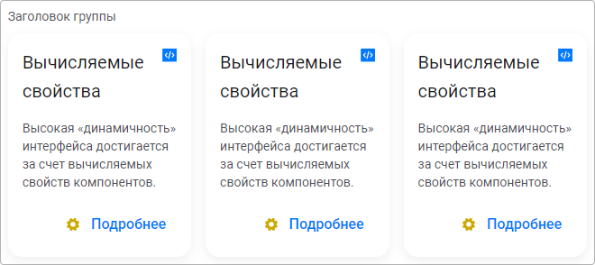
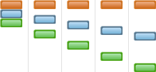
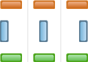
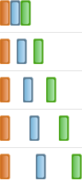
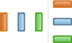
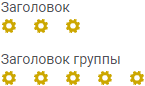
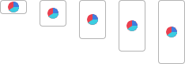
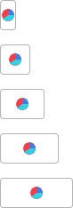
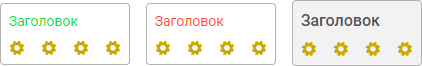

Свойства компонента интерфейса, унаследованного от компонента «ОбычнаяГруппа»
Обычная группа — это несколько компонентов, которые расположены горизонтально или вертикально. Они могут быть:
- окружены рамкой;
- отображаться на общем фоне заданного цвета;
- иметь общий заголовок.

Иерархия наследования
- Компонент (абстрактный)
- Группа (абстрактный)
Свойства
- ВыравниваниеСодержимогоПоВертикали
- Вертикальное выравнивание компонентов содержимого: Для вертикальной группы (Группировка = Вертикальная) это свойство не имеет смысла, если какой-то из компонентов содержимого растягивается по вертикали (подробнее).
- ИнтервалПоВертикали
- Вертикальный интервал между компонентами содержимого (свойство Содержимое). Авто
равно Одинарный. Половинный, Одинарный, Полуторный,
Двойной, Нет — без отступа, Авто — вид отступа
рассчитывается автоматически.

- ВыравниваниеСодержимогоПоГоризонтали
- Горизонтальное выравнивание компонентов содержимого: Для горизонтальной
группы (Группировка равно Горизонтальная) это свойство не имеет смысла, если какой-то
из компонентов содержимого растягивается по горизонтали (подробнее).

- ИнтервалПоГоризонтали
- Горизонтальный интервал между компонентами содержимого (свойство Содержимое). Авто
равно Одинарный. Половинный, Одинарный, Полуторный,
Двойной, Нет — без отступа, Авто — вид отступа
рассчитывается автоматически.

- Ориентация
- Способ расположения компонентов содержимого группы. Горизонтальная, Вертикальная.

- Заголовок
- Заголовок группы.

- ИспользоватьРазделитель
- Необходимость отображения разделительных линий между компонентами содержимого.
- Рамка
- Если свойство равно Истина - группа рисуется с рамкой
- ОтступПоВертикали
- Вертикальный отступ от границ группы до ее содержимого (свойство Содержимое). Авто
равно Одинарный. Половинный, Одинарный, Полуторный,
Двойной, Нет — без отступа, Авто — вид отступа
рассчитывается автоматически.

- ОтступПоГоризонтали
- Горизонтальный отступ от границ группы до ее содержимого (свойство Содержимое). Авто
равно Одинарный. Половинный, Одинарный, Полуторный,
Двойной, Нет — без отступа, Авто — вид отступа
рассчитывается автоматически.

- ПрокруткаПоВертикали
- Признак прокрутки по вертикали. Если равно Истина и компоненты содержимого выше, чем высота группы, то будет использоваться прокрутка по вертикали.
- ПрокруткаПоГоризонтали
- Признак прокрутки по горизонтали. Если равно Истина и компоненты содержимого шире, чем ширина группы, то будет использоваться прокрутка по горизонтали.
- СтилиОформления
- Массив стилей оформления. Стили применяются при отображении группы в порядке их перечисления в массиве.

- ЦветРамки
- Цвет рамки группы.
- ЦветФона
- Цвет фона группы.